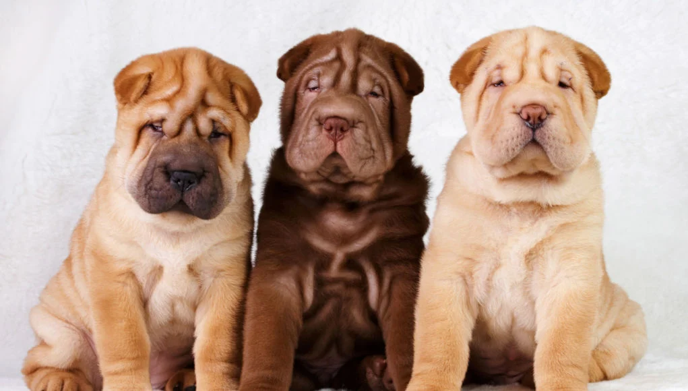

El Shar Pei es una raza originaria de China, con más de 2,000 años de historia. Originalmente criado para cazar cerdos salvajes y proteger propiedades, se caracteriza por su piel arrugada y cara de "hipopótamo". Su piel suelta era útil en combates, permitiéndole moverse sin ser dañado. A principios del siglo XX estuvo a punto de extinguirse, pero fue revivido en la década de 1970 gracias a un criador en Hong Kong. Características: Piel arrugada y rostro distintivo. Tamaño medio y musculoso. Temperamento leal, tranquilo y protector.
1. Arrugas por razones prácticas Las arrugas del Shar Pei no son solo una característica estética. Originalmente, estas arrugas servían como protección durante las peleas de perros y caza, ayudando a evitar que los perros rivales pudieran sujetarlos por la piel. 2. Lengua azul-negra Al igual que el Chow Chow, el Shar Pei tiene una lengua azul-negra, lo que es una característica genética rara y distintiva. Esto es uno de los rasgos más curiosos de la raza. 3. Fueron casi extintos El Shar Pei estuvo al borde de la extinción a principios del siglo XX debido a la prohibición de las peleas de perros en China y la falta de demanda. Sin embargo, fue revivido en la década de 1970, gracias al esfuerzo de un criador en Hong Kong. 4. Se llama "Perro de la piel arrugada" El nombre Shar Pei significa literalmente "perro de piel arrugada" en chino, lo que refleja su característica más distintiva. 5. Personalidad tranquila A pesar de su aspecto rudo, el Shar Pei es conocido por ser un perro tranquilo, leal y protector. Es un excelente compañero familiar y tiende a ser más independiente que otras razas. 6. Origen de las arrugas El Shar Pei fue originalmente criado para trabajos de protección y caza en áreas de difícil acceso, y sus arrugas lo ayudaban a moverse rápidamente sin ser atrapado por otros animales. 7. Una raza antigua El Shar Pei es una de las razas más antiguas de China, con orígenes que datan de más de 2,000 años. Se cree que fue utilizado como perro de caza y guarda durante la dinastía Han.